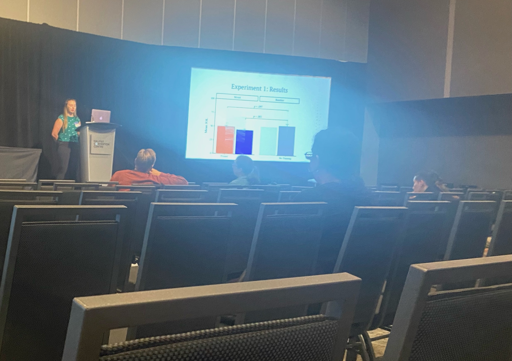
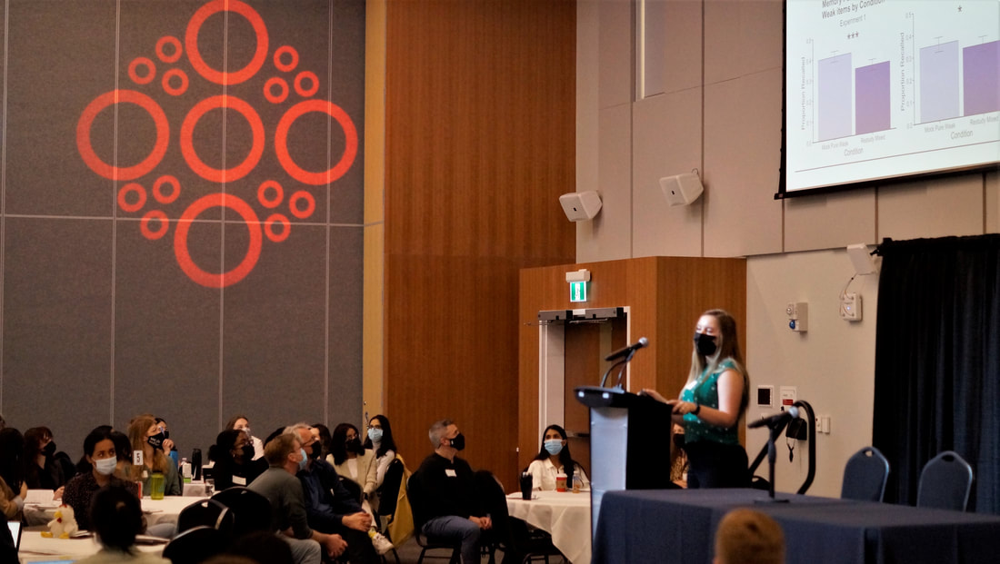
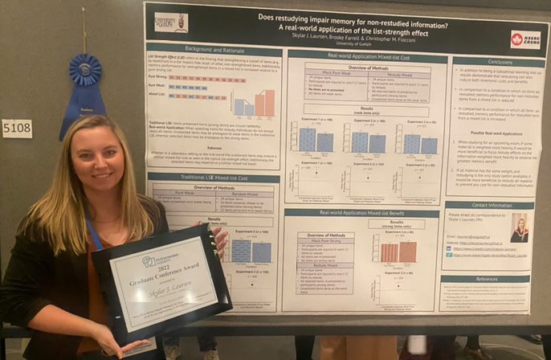
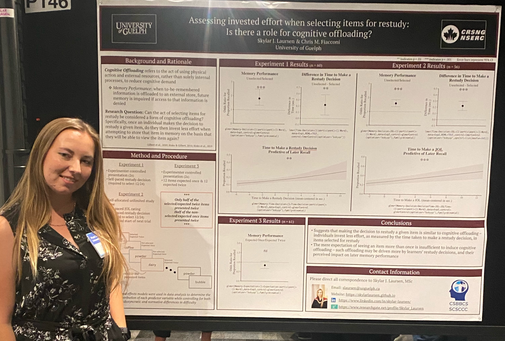
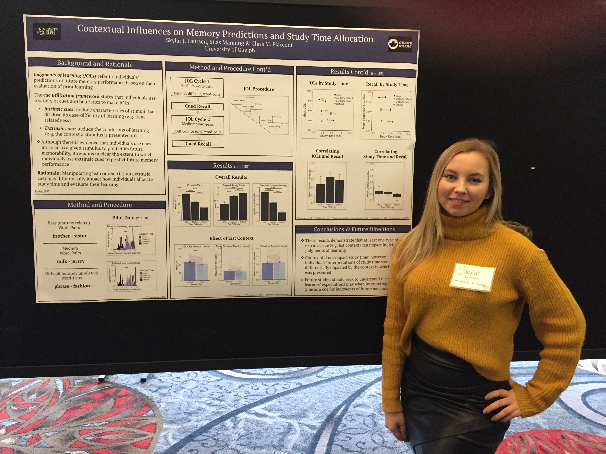
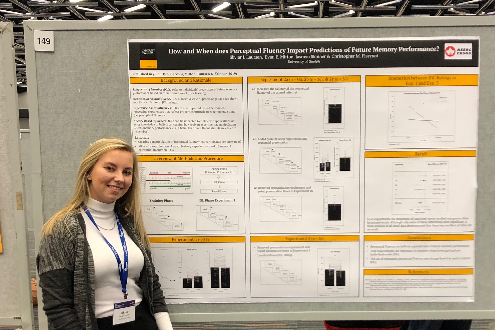
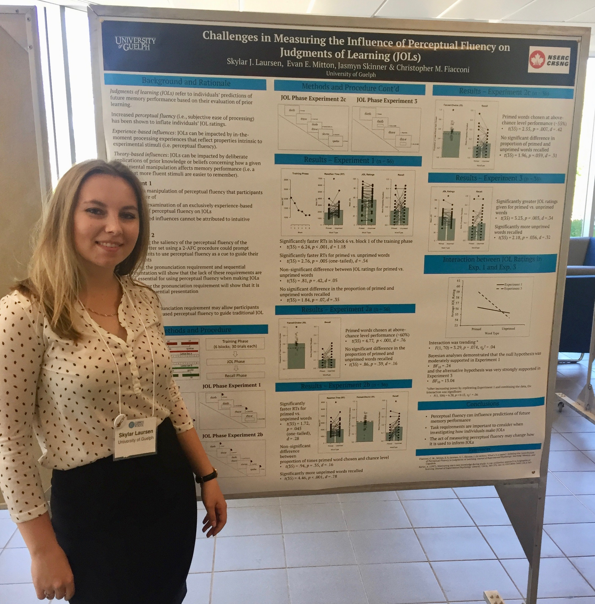
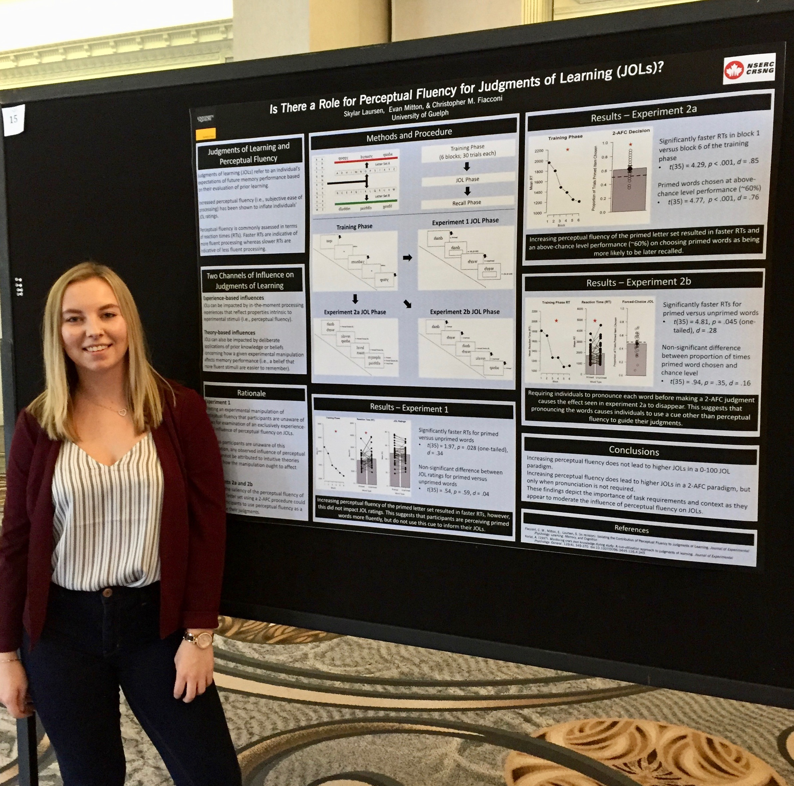

 Laursen, S.J., & Fiacconi, C.M. (2022). Probing the effect of perceptual (dis)fluency: It’s all relative. Canadian Society for Brain Behaviour and Cognitive Science (CSBBCS), Jul. 2022, Halifax, NS. (pictured left)
Churey, K.R., Laursen, S.J., & Fiacconi, C.M. (2022). How does asking about memory change performance? Assessing the reactivity of metacognitive judgments through memory for order. Canadian Society for Brain Behaviour and Cognitive Science (CSBBCS), Jul. 2022, Halifax, NS.
DiMarco, D., Laursen, S.J., Fiacconi, C.M. (2022). Is the errorful generation effect moderated by experimental design? Canadian Society for Brain Behaviour and Cognitive Science (CSBBCS), Jul. 2022, Halifax, NS.
Fiacconi, C.M., Laursen, S.J. (2022). Probing the hidden costs of re-studying. Canadian Society for Brain Behaviour and Cognitive Science (CSBBCS), Jul. 2022, Halifax, NS.
 Laursen, S.J., & Fiacconi, C.M. (2022). Does restudying entail a hidden cost for non-restudied information: A real-world application of the list strength effect. Toronto Area Memory Group (TAMeG), May 2022, Toronto, ON. (pictured right)
Laursen, S.J., Powers, E., & Fiacconi, C.M. (2022). Investigating performance related cue dominance when predicting future memory. University of Guelph Interdisciplinary Psychology Graduate Symposium, Apr. 2022, Guelph, ON (virtual).
Churey, K., Laursen, S.J., & Fiacconi, C.M. (2022). Metamemory and reactivity: Investigating the influence of metacognitive judgments on patterns of recall. University of Guelph Interdisciplinary Psychology Graduate Symposium, Apr. 2022, Guelph, ON (virtual).
DiMarco, D., Laursen, S.J., & Fiacconi, C.M. (2022). Can we learn from our mistakes? Exploring errorful generation. University of Guelph Interdisciplinary Psychology Graduate Symposium, Apr. 2022, Guelph, ON (virtual).
Laursen, S.J. (2022). Overcoming the limitations of traditional inferential statistics using a linear mixed-effect modelling approach. Hidden Methods Conference, Apr. 2022, University of Alberta, AB (virtual).
Laursen, S.J., & Fiacconi, C.M. (2021). Does restudying impair memory for non-restudied information. Canadian Society for Brain Behaviour and Cognitive Science (CSBBCS), Jun. 2021, Montreal, QC. (virtual).
Laursen, S.J., Wammes, J.D., & Fiacconi, C.M. (2021). Examining the influence of expected test format on the mnemonic impact and frequency of off-task thoughts/mind-wandering. University of Guelph Neuroscience Day, May. 2021, Guelph, ON. (virtual).
Laursen, S.J. (2021). ‘R’ you an artist?: A guide to visualizing data using R software (workshop). University of Guelph Interdisciplinary Psychology Graduate Symposium, Apr. 2021, Guelph, ON. (virtual).
Laursen, S.J., Fiacconi, C.M. (2020). Does expected test format differentially affect how individuals monitor their learning? University of Guelph Neuroscience Day, Jul. 2020, Guelph, ON. (virtual).
Laursen, S.J., Fiacconi, C.M. (2020). Contextual influences on the reciprocal relationship between monitoring and control strategies in self-regulated learning. McMaster Conference on Education & Cognition, Jul. 2020, Hamilton, ON. (virtual). see talk here

Laursen, S.J., Farrell, B., & Fiacconi, C.M. (2022). Does restudying impair memory for non-restudied information? A real world application of the list strength effect. Psychonomic Society Annual Meeting, Nov. 2022, Boston, MA. Graduate Coference Award (pictured right) see poster here

Laursen, S.J., & Fiacconi, C.M. (2022). Assessing the effort invested when selecting items for restudy: Is there a role for cognitive offloading? Canadian Society for Brain Behaviour and Cognitive Science (CSBBCS), Jul. 2022, Halifax, NS. (pictured left)
Laursen, S. J., Wammes, J.D., & Fiacconi, C.M. (2022). Examining the tendency to mind wander when preparing for different test formats and how this impacts future memory performance. University of Guelph Neuroscience Day, May 2022, Guelph, ON. see poster here
Laursen, S.J., Wammes, J.D., & Fiacconi, C.M. (2021). Examining the mnemonic impact and frequency of off-task thoughts/mind-wandering as a function of expected test format. Psychonomic Society Annual Meeting, New Orleans, LA. (virtual).
Laursen, S.J., & Fiacconi, C.M. (2021). Is there a hidden cost to restudy? McMaster Conference on Education & Cognition, Jul. 2021, Hamilton, ON. (virtual).
Laursen, S.J., & Fiacconi, C.M. (2021). Context-dependent use of the memorizing effort heuristic. Canadian Society for Brain Behaviour and Cognitive Science (CSBBCS), Montreal, QC. (virtual). see poster here
Sluka, D., Laursen, S.J., & Fiacconi, C.M. (2021). Are individuals’ re-study decisions sensitive to test format? Canadian Society for Brain Behaviour and Cognitive Science (CSBBCS), Jun. 2021, Montreal, QC. (virtual).
Laursen, S.J., Wammes, J.D., & Fiacconi, C.M. (2021). Does expected test format affect the mnemonic impact of off-task thought? University of Guelph Neuroscience Day, May. 2021, Guelph, ON. (virtual). Best Poster Honourable Mention
Laursen, S.J., Fiacconi, C.M. (2020). Contextual influences on monitoring and control strategies in self-regulated learning. Psychonomic Society Annual Meeting, Nov. 2020, Austin, TX. (virtual). see poster slides here
Laursen, S.J., & Fiacconi, C.M. (2020). Does test experience change how we monitor our learning? University of Guelph Neuroscience Day, Jul. 2020, Guelph, ON. (virtual).
 Laursen, S.J., Manning, S., & Fiacconi, C.M. (2020). Contextual influences on memory predictions and study time allocation. Lake Ontario Visionary Establishment (L.O.V.E), Feb. 2020, Niagara Falls, ON. (pictured right) see poster here

Laursen, S.J., Mitton, E.E., Skinner, J., & Fiacconi, C.M. (2019). How and when does perceptual fluency impact predictions of future memory performance? Psychonomic Society Annual Meeting, Nov. 2019, Montreal, QC. (pictured left) see poster here

Laursen, S.J., Mitton, E.E., Skinner, J., & Fiacconi, C.M. (2019). Challenges in measuring the influence of perceptual fluency on judgments of learning (JOLs). Canadian Society for Brain, Behaviour and Cognitive Science (CSBBCS), Jun. 2019, Waterloo, ON. (pictured right) see poster here
Laursen, S.J., & Fiacconi, C.M. (2019). When does perceptual fluency impact predictions of future memory performance? University of Guelph Honours Thesis Poster Conference, Apr. 2019, Guelph, ON. see poster here

Laursen, S., Mitton, E., & Fiacconi, C.M. (2019). Is there a role for perceptual fluency for judgments of learning (JOLs)? Lake Ontario Visionary Establishment (L.O.V.E), Feb. 2019, Niagara Falls, ON. (pictured left) see poster here
Mitton, E., Laursen, S., & Fiacconi, C. M. (2018). Task context moderates the influence of perceptual fluency on judgments of learning (JOLs): A role for cue saliency. Psychonomic Society Annual Meeting, Nov. 2018, New Orleans, LA.